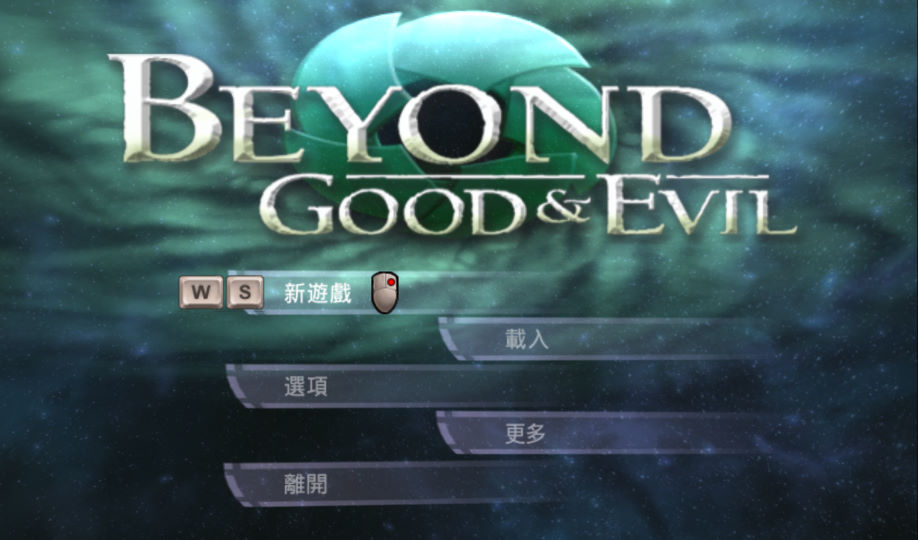

名稱：神鬼冒險／超越善惡／撕裂的天堂 (Beyond Good & Evil，中文／英文版)
簡介：Ubisoft 2003年出品的動作冒險遊戲，台灣由英特衛代理進口。2020年移植到Steam並
中文化 [待補]。

備註：本版為2020年Steam版（Win64），請參見內附的「遊戲啟動說明.txt」。
保護：原始版為光碟Tages
備註：原始版VirtualBox無法執行，虛擬機請使用VMware。
備註：Steam版需安裝EAX4。
備註：遊戲內定無字幕，需要的話請進入遊戲後，到選項中更改。
檔案：beyond_good_evil_v1.01.rar = 1.01更新檔
nocd100.rar = 1.00免光碟檔
nocd101.rar = 1.01免光碟檔